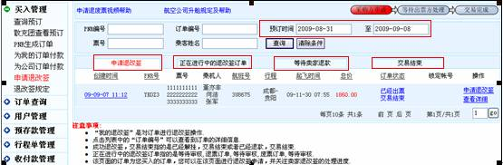
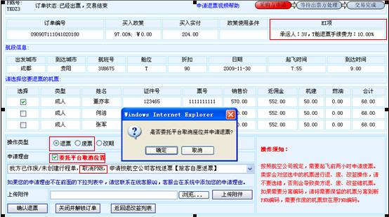
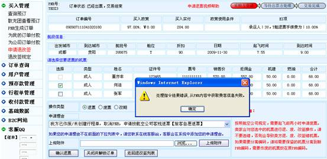
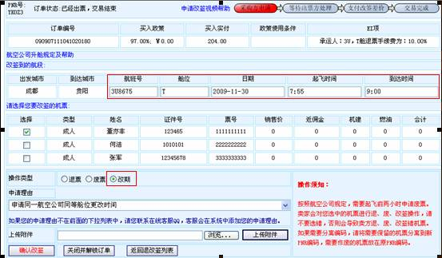

在“买入管理―申请退改签”列表中进行退改签操作

名词解释：
申请退改签：对“已经出票交易结束”且需要退票、废票或者改签的订单进行“退废改”操作，点击操作列表的“申请退改签”进入退改签详细操作页面；
正在进行中的退改签订单：已经申请了“退废改”操作的订单但是卖方还未处理；
“等待卖家退款”：等待卖家审核后才能退款的订单；
交易结束：已经处理完“退废改”操作的订单；
备注：
若在申请退改签列中无法查询到需要改签的订单，请核实此订单是否在预订时间范围内，若不是在时间范围内则需要选择预订时间范围。
2.退废票申请操作详解


C）申请时如果确定“委托平台取消位置”则会弹出提示，若“确定”则平台自动取消座位并申请成功；若该座位已经取消，再点“委托平台取消位置”时则会提示“处理指令结果错误，从PNR内容中获取乘客信息失败”此时需要去掉“委托平台取消位置”前面所打的“勾”再确定退票才能操作成功；
d)上传附件时需要注意附件的格式和大小；
e）请仔细阅读页面底部的注意事项以避免给您带来不必要的麻烦！
3.改签操作
如果选择改期，系统会弹出改签的相关信息，待确定后再填写改签的“舱位或者时间”和申请理由，确认改签后则申请改签成功。
